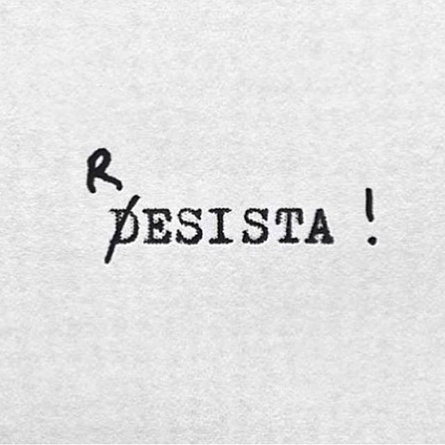

-
Jogo
 Clique para aqui para começar -
Criadores
Clique para ver os criadores
Bem vindos ao nosso prejeto "O Jogo que você sempre desiste"! Podíamos dizer que foi fácil, mas realmente estaríamos mentindo. Nós trocamos de ideia tantas vezes sobre o conteúdo do jogo que até perdemos a conta! Mas realmente, ver o produto final é muito gratificante e estamos contentes em trazer mais um game que provocará grandes competições entre seus amigos ou apenas te ajudará a passar o tempo. Para jogar, basta apagar os blocos que surgem na tela e não deixar o mouse parado. A medida que o tempo passa, seu apagador vai diminuindo, o que trará maior nível de dificuldade ao jogo. Ainda sim você sempre desistirá, a questão é saber quem será mais resistente a tentação de clicar em "desisto". Espero que tenham gostado, aproveitem o jogo!